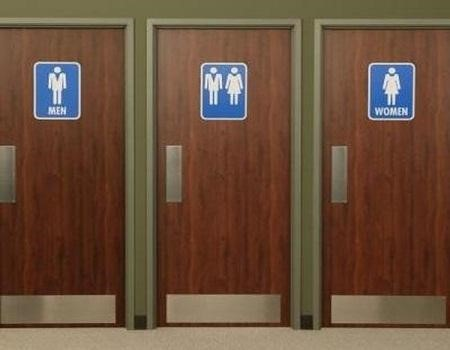

CetSolutions
Los horarios de clase es algo que todos hay que acostumbrar como horas de entrada y salida, pero estas pueden ser un problema para los baños de los caballeros de forma que se abren después de 1 o 2 horas después de la entrada (7:00am) Y veo que varios chicos tienen que esperar a la hora que este se abre para poder hacer sus necesidades También los horarios deben de estar ya especificados las horas de uso y de su limpieza para todo el público.
